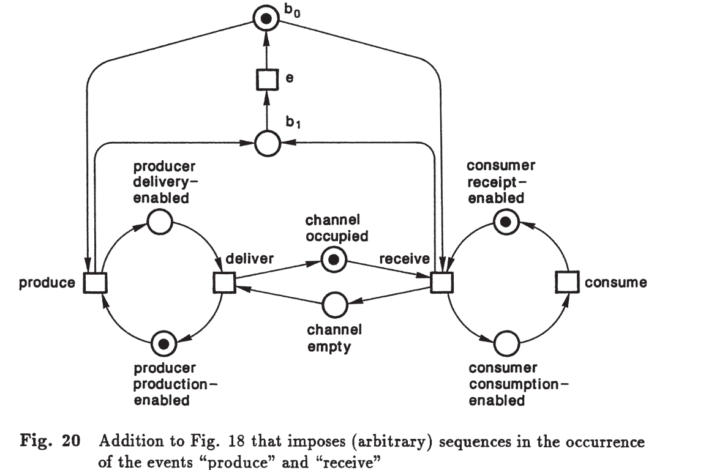

Capítulo 2 – Redes Condição-Evento (Condition/Event Nets)#
Da Agência-Canal às Redes de Petri#
Na formulação original de Carl Adam Petri (1962), as redes foram concebidas para descrever sistemas de comunicação. Ele utilizava a ideia de channel/agency nets, onde:
Agencies eram elementos ativos, que executavam transformações.
Channels eram meios de transporte ou armazenamento de objetos.
Com o amadurecimento da teoria, essa visão foi refinada para condition/event nets, que enfatizam a estrutura lógica:
Conditions → estados possíveis do sistema (verdadeiros ou falsos).
Events → transformações que alteram quais condições são verdadeiras.
Mais tarde, a mesma estrutura foi representada como place/transition nets (a notação mais comum hoje):
Places correspondem às condições.
Transitions correspondem aos eventos.
Assim, condition/event nets podem ser vistas como a primeira formulação estruturada das redes de Petri, imediatamente anterior ao formalismo place/transition. Neste capítulo, seguimos a terminologia de Reisig, que parte das redes condição-evento para introduzir gradualmente o formalismo mais geral.
2.1 Um Exemplo#
Considere um sistema genérico onde objetos são:
Produzidos,
Armazenados em um canal,
Removidos em algum instante,
Consumidos posteriormente.
Esses objetos podem ser bens, mensagens, dinheiro, dados ou serviços. O interesse está no padrão comum de comportamento, e não em um domínio específico.
O evento deliver pode ocorrer quando:
Após sua ocorrência, temos:
#
2.2 Regras Formais#
Uma rede condição-evento é composta por:
Condições (\(b \in B\)), representadas por círculos;
Eventos (\(e \in E\)), representados por retângulos;
Arcos de condições para eventos (\(b \to e\)) e de eventos para condições (\(e \to b\));
Tokens (@), representando quais condições estão satisfeitas.
Definições:#
\(b \to e\) significa que \(b\) é pré-condição de \(e\).
\(e \to b\) significa que \(b\) é pós-condição de \(e\).
Um caso é o conjunto \(C \subseteq B\) de condições satisfeitas.
Um evento \(e\) está ativado em \(C\) se:
Quando \(e\) ocorre, o novo caso é:
2.3 Conflitos#
Dois eventos \(e_1, e_2\) estão em conflito se ambos são ativados, mas a ocorrência de um desativa o outro.
Formalmente:
Exemplo: dois processos competindo por uma chave para acessar memória.
2.4 Contatos e Complementação#
Um contato ocorre quando:
todas as pré-condições de um evento estão satisfeitas,
e pelo menos uma de suas pós-condições também está satisfeita.
Formalmente:
Para eliminar contatos, introduz-se a condição complementar:
Para cada condição \(b\), define-se \(b'\) tal que:
\(b\) pré-condição de \(e \iff b'\) é pós-condição de \(e\).
Em qualquer caso, exatamente um de \(\{b, b'\}\) está satisfeito.

2.5 Processos em Redes Condição-Evento#
Em redes condição-evento, como discutido na Seção 2.2, sempre há a indicação de um caso inicial.
A partir dele (ou de outro caso), eventos podem ocorrer e, como consequência, os casos podem ser modificados.
Um complexo de eventos desse tipo é chamado de processo.
É importante observar que aqui processo significa coleção de ocorrências de eventos em sistemas ou redes, e não o mesmo conceito de processo do sistema operacional (como discutido na Seção 2.3).
Ocorrências repetidas#
Em um processo, eventos podem se repetir. Condições podem mudar repetidamente ao longo da evolução.
Sequência ou independência?#
Seria tentador definir um processo apenas como uma sequência de eventos.
No entanto, essa definição é inadequada:
Em certos casos, dois eventos são independentes.
Exemplo: na Figura 13, os eventos produce e receive podem ocorrer independentemente.
A representação “primeiro produção, depois recebimento” é tão correta (e errada) quanto “primeiro recebimento, depois produção”.
A rede não impõe ordem.
Portanto, um processo não deve impor sequências arbitrárias quando eventos podem ocorrer em paralelo.
Se a ordem entre eventos for importante para o sistema, medidas podem ser adotadas para forçar uma sequência.
Exemplo: na Figura 20, condições complementares \(b_0, b_1\) e um evento \(e\) forçam que, após a ocorrência do primeiro evento (produção ou recebimento), o evento \(e\) deve ocorrer antes que o outro aconteça.
Assim, onde a ordem for necessária, ela pode (e deve) ser imposta.
Mas, onde isso não é o caso, deve-se manter explícita a independência (paralelismo, concorrência, não-sequencialidade).

Representação de processos#
Para representar processos de modo adequado:
Cada ocorrência de evento é representada como um retângulo (box).
Cada realização de condição é representada como um círculo.
Inscrições identificam os eventos e condições correspondentes.
Setas (arcos) indicam a relação causal entre condições satisfeitas e eventos ocorridos.
Essa forma de representação é ilustrada na Figura 21, baseada na Figura 18.
Observação: Apenas redes livres de contato podem ser representadas diretamente dessa forma.
Contact-Free Nets#
Apesar dessa restrição, isso não é uma limitação real.
Vimos na Seção 2.4 que qualquer rede condição-evento pode ser transformada em rede livre de contato por meio da introdução de condições complementares.
Assim, qualquer rede pode ser representada como processo.
Construção de processos#
A Figura 21 mostra um exemplo da construção de processos.
A representação em forma de grafo causal explicita a independência e a ordem imposta apenas quando necessário.
Essa abordagem constitui a base para compreender a concorrência em redes de Petri, pois os processos capturam:
Sequências obrigatórias, quando a estrutura da rede impõe ordem;
Independência, quando eventos podem ocorrer em paralelo.
 #
#
2.6 Exemplos#
Sistema de Produção com Máquinas e Operadores – representação de fluxos alternativos.

Posto de Gasolina Self-Service – modelagem de filas, uso de bombas e pagamento.